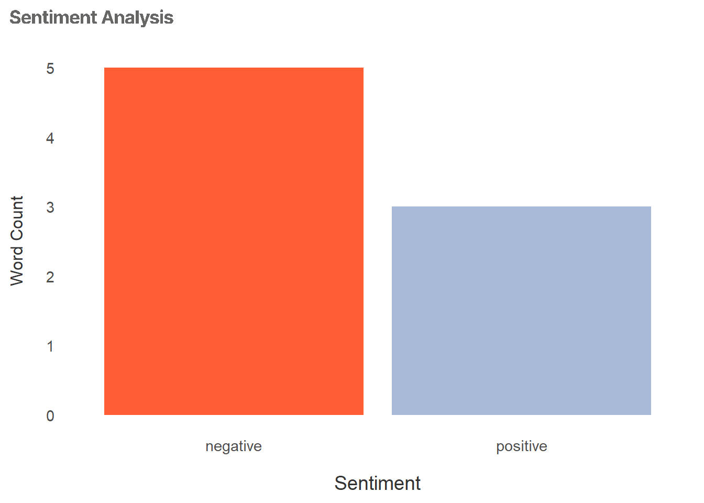

Analysis Plan
Planning Your Analysis
Selecting the right analysis depends on:
How much data you have
Your research question(s)
Whether you need exploratory insights or answers to specific questions
Your integrative framework (if conducting mixed-methods)
Understanding Your Data Before Analysis
Before starting pre-processing or analysis, it’s important to assess the scope and quality of your data. Take time to understand:
How many participants are included?
How much text do you have (word count, number of responses)?
How detailed are the responses (in-depth vs. brief)?
How are participants grouped (by stakeholder type, session, etc.)?
Whose voices are most important to elevate in this analysis?
This step ensures you choose methods that fit your dataset and align with your project goals. For example:
Smaller datasets (under ~2,000 words) are well-suited to word frequency, sentiment analysis, or basic content analysis.
Larger datasets (5,000+ words) can support topic modeling or advanced thematic analysis.
Assessing your data upfront helps set realistic expectations for analysis and ensures your findings are grounded, transparent, and defensible.
Working with a Small Corpus
At Omni, qualitative research often happens in real-world settings, with tight timelines and limited participant availability. We may aim for 10 interviews and complete 5. We may expect long, detailed conversations and instead get brief answers. Even with these constraints, small datasets can still provide meaningful insights, especially when there is consistency across participant experiences.
When working with limited data:
Focus on what participants actually shared, rather than attempting to generalize.
Document patterns and recurring concerns, while linking them clearly to the project’s research questions.
Be transparent about the number of participants, the methods used, and any limitations in interpretation.
Smaller samples can still highlight critical issues—such as barriers to access or common recommendations for program improvement—but the scope and representativeness of these findings should be clearly communicated.
Suggested Methods by Dataset Size and Purpose
Grouping Voices to Guide Analysis
Before you start coding or analyzing, decide:
Whose voices are we centering in this analysis?
How will we group participant responses?
Your grouping choices influence:
Which perspectives are highlighted
How themes emerge
What questions you can answer
At Omni, we might group data by:
Participant (individual experiences)
Stakeholder Group (e.g., educators vs. public health professionals)
Discussion Section (e.g., barriers vs. recommendations)
These decisions should align with the project’s goals and be clearly documented in reports and presentations.
Word frequency analysis

Word frequency analysis is a simple and effective method that counts how often specific words appear in your dataset. It’s often used early in qualitative analysis to get a general sense of prominent topics, but it can also be applied as a stand-alone method to identify frequently mentioned issues in participant responses. Word frequency works best when you have a reasonable amount of text to analyze. As a general best practice, having at least 100–200 content words (excluding stop words) allows for more reliable interpretation of patterns, though smaller datasets can still offer preliminary insights.
To ensure accuracy, it’s important to pre-process your text. Using lemmatized words helps avoid counting variations like “run” and “running” separately, and removing stop words—common words such as “the” or “and”—allows you to focus on terms that carry more meaning. In cases where participants mention names of places or projects repeatedly, custom stop word lists can also help refine the results.
While word frequency counts themselves do not explain context or meaning, they can help point to emerging themes by highlighting concepts that recur across participants or within particular sections of discussion. For example, if words like “transportation,” “access,” and “barrier” frequently appear in responses about service challenges, they signal a potential theme that warrants deeper exploration. Word frequency analysis can also help guide more interpretive methods such as thematic or content analysis, and is most useful when findings are contextualized within the broader dataset and research goals.
# A tibble: 6 × 2
word n
<chr> <int>
1 time 4
2 people 3
3 access 2
4 application 2
5 applications 2
6 process 2
Sentiment analysis
Sentiment analysis is a method that measures the emotional tone of text by categorizing words or phrases as positive, negative, or neutral. It can be used to quickly gauge participants’ attitudes toward a topic or to assess the overall tone of responses across interviews, focus groups, or surveys. Sentiment analysis works best when you have larger amounts of text—ideally, datasets with several hundred words or more—because emotional tone can vary within short responses, making sentiment harder to interpret in very small datasets. However, it can still offer insights in smaller datasets when applied carefully and when results are presented as exploratory.
Best practices for sentiment analysis include pre-processing your text by removing stop words and standardizing language through lemmatization. This ensures consistent scoring and avoids misclassifications due to word variations. Sentiment analysis typically relies on pre-built lexicons, such as Bing, AFINN, or the NRC Emotion Lexicon, which assign emotional values to words. It’s important to note that these lexicons were often designed for general use (such as social media text) and may require customization to fit specific public health or social science contexts. For example, in health-related interviews, a word like “treatment” might appear frequently and carry different sentiment depending on the discussion’s focus.
While sentiment analysis doesn’t capture nuance or context in the way manual coding can, it can highlight patterns of emotional tone across datasets or within specific discussion topics. For example, sentiment analysis might reveal that participants express more negative sentiment when discussing barriers to accessing services, and more positive sentiment when discussing recommendations for future improvements. These insights can help guide deeper qualitative coding or serve as an additional layer of analysis to support findings. As with any automated method, it’s important to review and interpret results in context and to document any limitations or adaptations made to the analysis.
# A tibble: 2 × 2
sentiment n
<chr> <int>
1 negative 5
2 positive 3
Tip for finding quotes by tone
Let’s say you want to pull a quote to include in a report and you know that you want it to be a positively toned quote in a “recommendations” section of your discussion. You can use the sentimentr package to gather sentiments of each sentence (or segment) and sort by sentiment score to find the quote with the most positive tone in your criteria.
See an example below:
# A tibble: 7 × 12
line speaker participant_id question section section_label text session
<int> <chr> <chr> <dbl> <dbl> <chr> <chr> <chr>
1 2 participant P1 0 1 Introduction sure… Educat…
2 3 participant P2 0 1 Introduction i ag… Educat…
3 5 participant P1 0 2 Barriers trav… Educat…
4 6 participant P2 0 2 Barriers also… Public…
5 8 participant P1 0 3 Recommendatio… more… Public…
6 9 participant P2 0 3 Recommendatio… simp… Public…
7 10 participant P1 0 3 Recommendatio… prov… Public…
# ℹ 4 more variables: element_id <int>, avg_sentiment <dbl>,
# sd_sentiment <dbl>, n_sentences <int>Mixed-methods with sentiment analysis
Because sentiment analysis gives you a numeric output as a sentiment score, you can imagine instances where you may want to compare sentiment scores between groups, correlate sentiment scores with other variables in a quantitative survey, or conduct pre-post comparisons.
Topic modeling
Topic modeling is an automated method used to identify themes or topics across large collections of text. It uses algorithms to group together words that frequently appear in similar contexts, helping reveal hidden patterns or structures in qualitative data. Topic modeling is especially useful when you have large datasets—typically a minimum of 5,000 words or more spread across multiple documents or participant responses. The method works best when documents are of relatively similar length, which helps the model assign topics more evenly.
This method is not recommended for use on smaller corpuses and would be considered poor practice to rely on it to generate meaningful insights. If you don’t have enough data for this analysis, consider using the content analysis strategy to identify themes in the data.
Before running a topic model, it’s important to pre-process your text. Best practices include stemming words to reduce variation (so that “run” and “running” are treated as the same word) and removing stop words to focus on meaningful content. Topic modeling doesn’t require predefined codes or themes, making it a good exploratory tool for surfacing unexpected topics in your data. However, it’s important to remember that these topics are generated algorithmically—they group terms based on statistical patterns, not human interpretation. As a result, human review is always needed to interpret and label the topics in a way that makes sense for your project and participants.
Topic modeling can complement manual coding by offering a high-level view of common themes, pointing analysts toward areas that may warrant deeper exploration. For example, a topic model might surface clusters of words related to barriers (“transportation,” “access,” “cost”) and another cluster about solutions (“education,” “outreach,” “support”), giving you a starting point for thematic analysis. Commonly used R packages for topic modeling include topicmodels, which provides algorithms like Latent Dirichlet Allocation (LDA), and tm for pre-processing and managing textual data.
[1] 46.1033[1] 46.13593# A tibble: 20 × 3
# Groups: topic [2]
topic term beta
<int> <chr> <dbl>
1 1 time 0.0617
2 1 transportation 0.0544
3 1 services 0.0467
4 1 residents 0.0313
5 1 challenges 0.0297
6 1 agree 0.0281
7 1 lot 0.0278
8 1 access 0.0276
9 1 applications 0.0275
10 1 application 0.0274
11 2 people 0.0800
12 2 time 0.0695
13 2 process 0.0485
14 2 application 0.0381
15 2 applications 0.0381
16 2 access 0.0380
17 2 timeconsuming 0.0264
18 2 campaigns 0.0260
19 2 buses 0.0254
20 2 simplifying 0.0253# A tibble: 30 × 3
# Groups: topic [3]
topic term beta
<int> <chr> <dbl>
1 1 time 0.0778
2 1 transportation 0.0543
3 1 services 0.0542
4 1 lot 0.0390
5 1 residents 0.0353
6 1 applications 0.0347
7 1 access 0.0312
8 1 vouchers 0.0261
9 1 makes 0.0256
10 1 planning 0.0249
# ℹ 20 more rowsContent analysis
Content analysis is a method used to count how often predefined concepts, themes, or categories appear in qualitative data. It relies on a dictionary—a list of key terms or phrases—designed to reflect your evaluation questions or coding framework. Content analysis works well for both small and large datasets, making it a flexible tool when you want to systematically measure the presence of specific themes across interviews, focus groups, or open-ended survey responses.
A key requirement for effective content analysis is a carefully designed dictionary that accurately captures the concepts you’re interested in. This might include terms related to barriers, facilitators, or recommendations, depending on the project’s goals. Best practice is to validate the dictionary by reviewing examples of matched text to make sure the terms are identifying the intended content. You may need to refine the dictionary over time, adding synonyms or removing words that generate false positives.
Content analysis can help answer questions like “How frequently do participants mention prevention strategies?” or “What percentage of responses reference funding challenges?” It is particularly useful when you need to quantify qualitative data for reporting purposes, or when you want to compare how frequently themes appear across different stakeholder groups. In R, the quanteda package offers efficient tools for dictionary-based content analysis, allowing you to apply a dictionary and quickly summarize how often key terms or concepts appear in the dataset.
Document-feature matrix of: 7 documents, 109 features (81.26% sparse) and 0 docvars.
features
docs sure i think one of the biggest challenges is transportation
text1 1 1 1 1 5 2 1 1 1 1
text2 0 1 0 0 0 0 0 0 0 0
text3 0 0 0 0 1 0 0 0 0 0
text4 0 0 0 0 0 4 0 0 1 0
text5 0 0 0 0 0 0 0 0 0 0
text6 0 0 0 0 0 1 0 0 0 0
[ reached max_ndoc ... 1 more document, reached max_nfeat ... 99 more features ]Document-feature matrix of: 7 documents, 3 features (85.71% sparse) and 0 docvars.
features
docs prevention treatment harm_reduction
text1 0 1 0
text2 0 0 0
text3 1 0 0
text4 0 0 0
text5 2 0 0
text6 0 0 0
[ reached max_ndoc ... 1 more document ][1] "text1" "text2" "text3" "text4" "text5" "text6"# A tibble: 6 × 12
line speaker participant_id question section section_label text session
<int> <chr> <chr> <dbl> <dbl> <chr> <chr> <chr>
1 2 participant P1 0 1 Introduction sure… Educat…
2 3 participant P2 0 1 Introduction i ag… Educat…
3 5 participant P1 0 2 Barriers trav… Educat…
4 6 participant P2 0 2 Barriers also… Public…
5 8 participant P1 0 3 Recommendatio… more… Public…
6 9 participant P2 0 3 Recommendatio… simp… Public…
# ℹ 4 more variables: doc_id <chr>, prevention <dbl>, treatment <dbl>,
# harm_reduction <dbl>Thematic Analysis in Dedoose
@qualBPT help here!! Can we add anything re coding to this guide in this section, maybe Ivonne’s work? What other programs should we add?
If using Dedoose to conduct thematic analysis, we recommend a structured, reflective approach grounded in reflexive thematic analysis (Clarke & Braun, 2006) and informed by critical realism.
Here’s how to approach it:
- Start with Familiarization Read through transcripts or responses in full before coding.
Use memos to reflect on initial impressions, patterns, and researcher assumptions.
- Develop Codes Iteratively Begin with inductive coding (bottom-up), focusing on what participants actually say.
Avoid pre-loading the codebook unless doing deductive analysis is needed for evaluation purposes.
Use Dedoose’s “Descriptor” fields to track context (e.g., stakeholder group, session type) for later analysis.
- Apply Codes Reflexively Apply codes carefully, updating definitions and merging/splitting codes as needed.
Encourage coders to discuss disagreements and maintain an audit trail of key coding decisions.
- Construct Themes Thoughtfully After coding, review excerpts by code and group them into broader themes that reflect patterns across participants.
Use Dedoose’s “Code Co-Occurrence” and “Code Application” tools to explore theme structure.
- Acknowledge Researcher Role Reflect on how your perspective, language, and interpretation influence theme development.
Be cautious not to overstate findings; describe patterns and nuance rather than asserting consensus.
- Document Everything Keep a record of how codes and themes evolved.
Clearly state the number of participants or excerpts that informed each theme.
Make your interpretive lens and limitations explicit—especially when datasets are small or uneven across groups.
Thematic analysis in Dedoose should still reflect Omni’s commitment to critical realism: treat participant input as reflecting real issues shaped by context and perspective, and be transparent about what the data can—and cannot—support.
Combining analyses
No single method can fully capture the richness and complexity of qualitative data. At Omni, we often combine different qualitative analysis approaches to explore various angles of our data and answer nuanced evaluation questions. Pairing methods like word frequency, sentiment analysis, content analysis, and thematic analysis can help reveal both patterns and meaning, ensuring our findings are grounded in evidence and provide actionable insights.